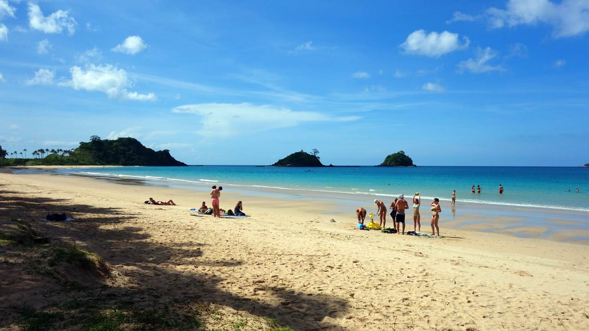
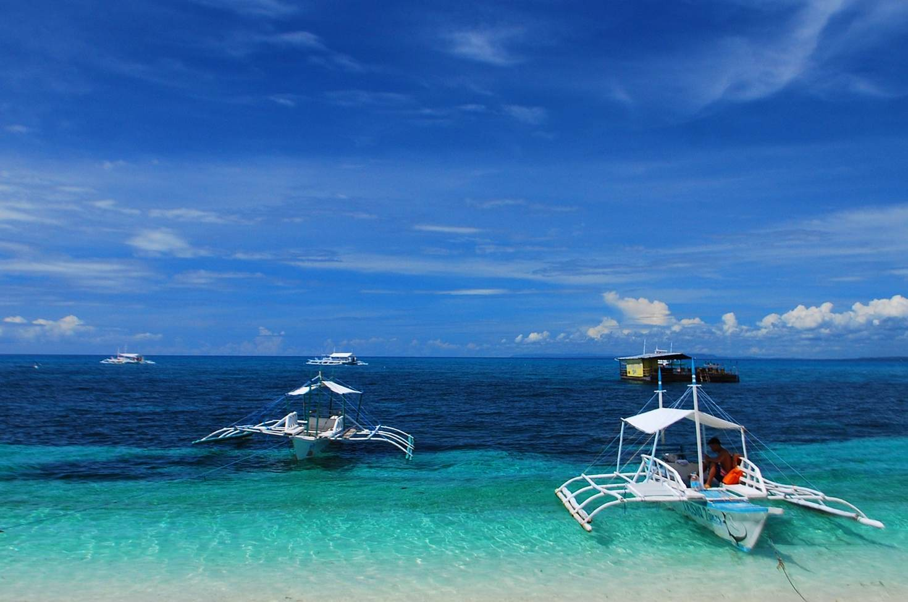
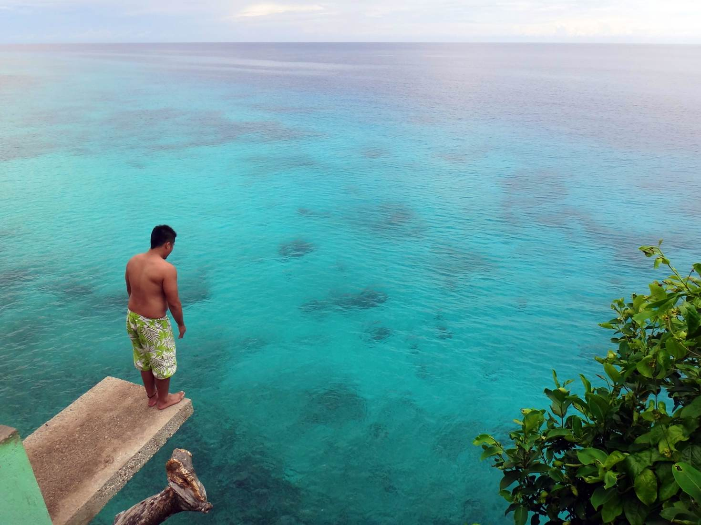

The Philippines is generating a buzz as a less-discovered alternative to Southeast Asian beach hotspots like Bali and southern Thailand. It's not hard to see why. The country has more than 7000 islands, most boasting at least an idyllic beach or two. With such a wealth of coastal pleasures on offer, it can be tricky to pick your spot. Here are a few areas to home in on.
El Nido
The dramatic limestone formations of the Bacuit Archipelago keep the postcard vendors in business, but unless you're a serious rock climber you'll spend more time on the beaches around this laid-back northern Palawan town. The islands of the archipelago are blessed with dozens of beaches, the best of which are visited on island-hopping excursions out of El Nido. Alas, these do get crowded and cost a bit of money to get to.
Cebu
This banana-shaped island has accessibility going for it – international flights from Asian hubs such as Hong Kong and Singapore fly right into the Visayas' largest city, Cebu City. Near the airport on Mactan Island you'll find a variety of high-end, family-oriented resorts. The beaches on Mactan are nothing special, so hire a boat to take you out to islands in the Bohol Strait, where ample quantities of white sand grace the numerous beaches. If you have more time, travel three hours by car to the northern tip of the island, where pump boats make the 10-minute trip to dreamy Malapascua Island, home to blinding-white Bounty Beach and, for scuba divers, thresher sharks. Alternatively, drive southwest to the diving town of Moalboal, which offers the rare chance to swim just offshore with giant schools of sardines.
Southern Negros
If you want to sample several world-class beaches in one short trip, look no further than southern Negros. Fly into Dumaguete, the regional capital of Negros Oriental, and you are within an hour of Apo Island, a top dive site with backpacker-friendly accommodation on an utterly isolated stretch of sand; escapist paradise Tambobo Bay; and Siquijor Island. rung with bone-white beaches and exceptional value accommodation. Further afield (four hours away by bus), you'll feel like you've reached the end of the Earth at Sipalay's Sugar Beach.